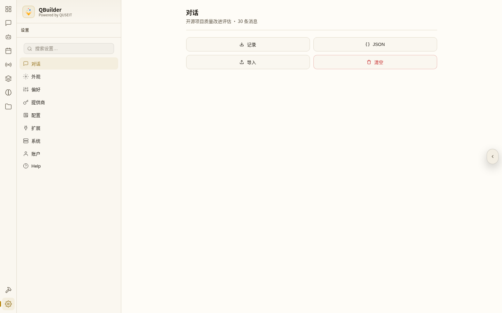
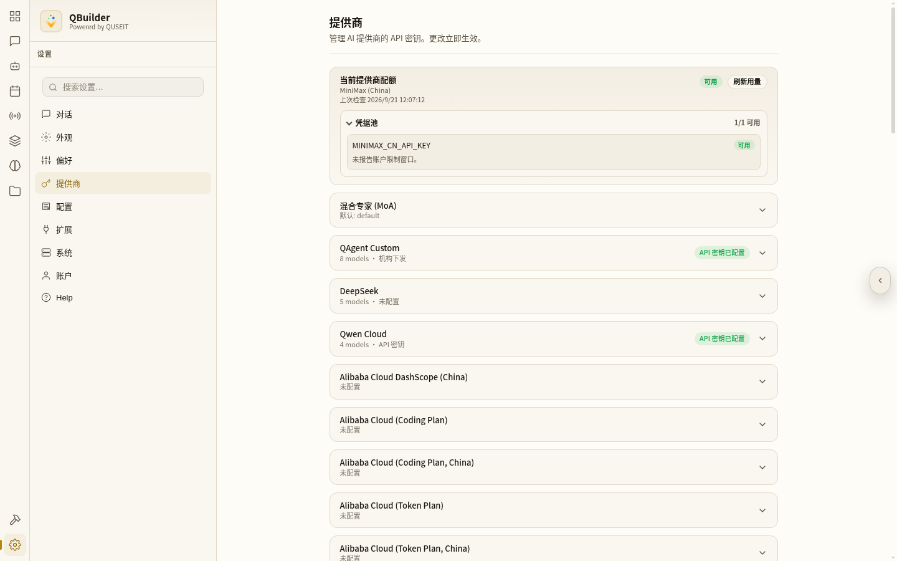
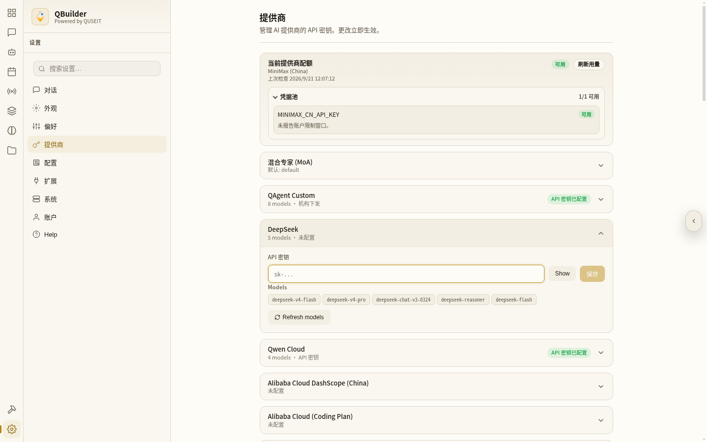
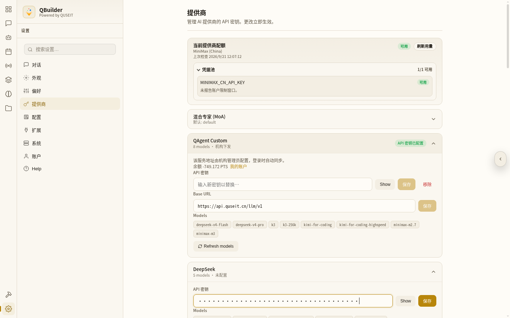
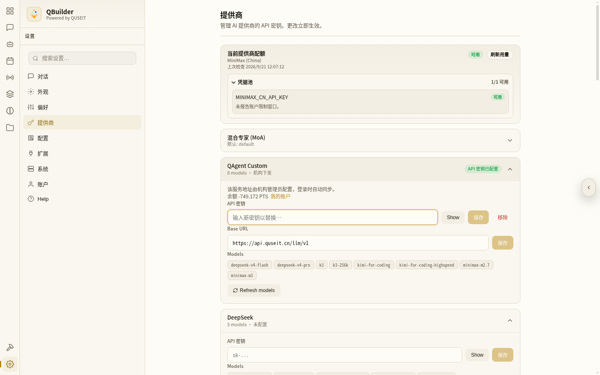
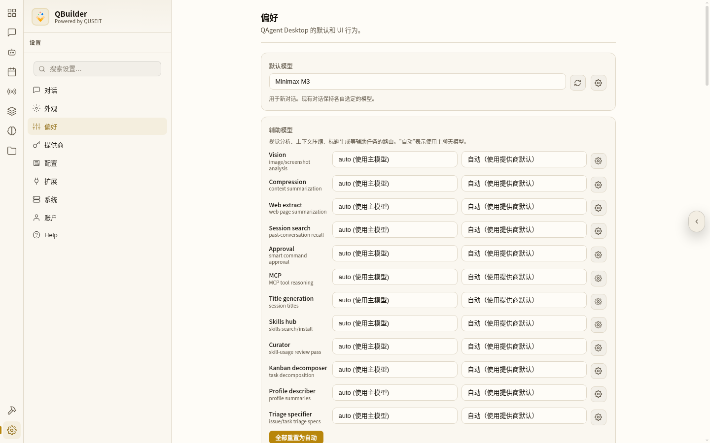
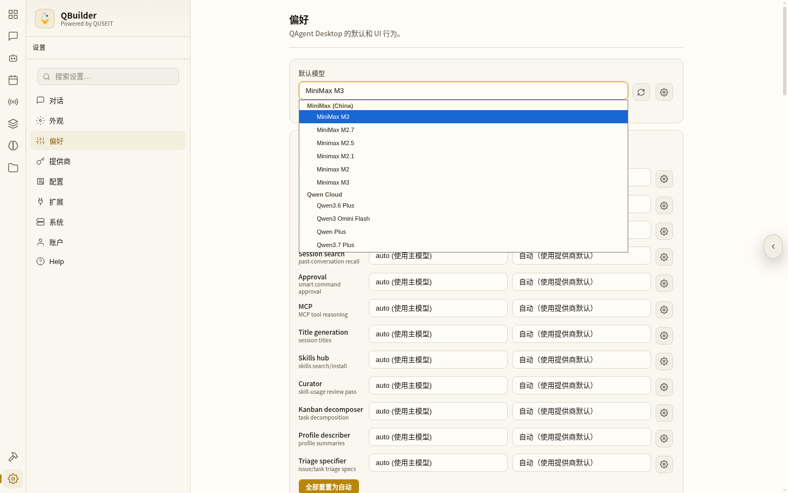
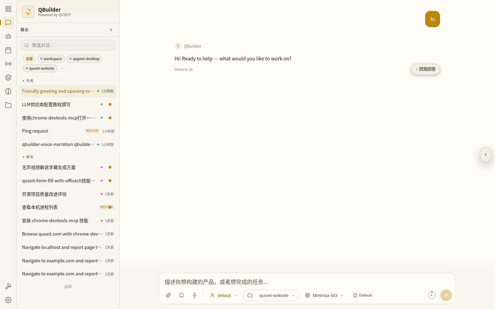

QBuilder 中如何配置大语言模型
从设置 → 提供商 填 API Key,再到偏好选默认模型,首次输入 hi 完成联通测试。
为什么 QBuilder 要"先配 LLM 才能用"?
QBuilder 采用了LLM 供应商不绑定的策略 — 也就是说,默认它不替你挑模型,也不替你付 API 账单。听起来起步麻烦一些,但是给了用户充分的选择空间:DeepSeek、Qwen、Kimi、MiniMax、OpenAI、Anthropic、Gemini、本地 Ollama、自部署网关……你想用哪个都行,只要你手里有对应的 API Key。
带来的好处是直接的:
- 成本可控:比价比哪家便宜就用哪家,不被某个供应商绑定。
- 数据合规:可以接自部署或本地中转,数据不外发。
- 容灾切换:某个供应商挂了可以马上切到另一个,不影响日常工作。
整体流程
整个配置分四段:
- 第 0 步:进设置页 — 点左侧最下角的齿轮图标进入。
- 第 1 步:进「提供商」页 — 在设置页中间的菜单里点 提供商。
- 第 2 步:配 Key — 找到想用的供应商,展开条目填 API Key 并保存。
- 第 3 步:设默认模型 — 切到设置页里的「偏好」,刷新模型列表,挑你想默认使用的那个,滚到底部点保存设置。
- 第 4 步:回仪表盘输入
hi验证。
第 0 步 · 进入 Settings
登录之后,点击左侧最下方的 Setting
~10 秒登录后你直接落在仪表盘(Dashboard),中央是一个问候语 + 五个场景按钮 + 输入框。先不要急着对话 — 没有 Key 是发不出去的。
QBuilder 主界面在左侧最下方有一个齿轮图标(Settings),它是整套系统配置的入口。点它进入设置页。

第 1 步 · 选择「提供商」菜单
在设置页中间的菜单里,点击「提供商」
~10 秒进入设置页后,你会看到左侧中间列出了设置的中间菜单(整个设置系统的二级导航):
- 对话 / 外观 / 偏好 / 提供商 / 配置 / 扩展 / 系统 / 账户 / Help
点 提供商 这一项,页面右侧就会切换到 LLM 供应商列表。
提供商页面里会铺出来所有 QBuilder 内置支持的供应商,每个条目都告诉你:
- 供应商名称(如 DeepSeek、Qwen Cloud、MiniMax、Anthropic、Gemini、OpenAI 等)。
- 如果所填写的 LLM KEY 有效,则会进一步列出支持模型数(如 5 models、10 models)。
- 当前状态:未配置(还没填 Key)或 API 密钥已配置(已经填过)。

第 2 步 · 配置一个供应商(以 DeepSeek 为例)
展开 DeepSeek 条目,填入 API Key 并保存
~1 分钟假设我们想要使用 DeepSeek 的模型,并且已经拿到了一个形如下面的密钥:
sk-ABABABABABABABABABABABABABABABAB下面把这串 Key 接进 QBuilder:
2.1 点击 DeepSeek 条目展开
在提供商列表里找到 DeepSeek 这一行,点一下卡片本身(不是右侧的箭头图标)。卡片会展开成一个输入区。

展开后你会看到:
- API 密钥输入框(密码掩码,默认看不到明文)。
- Show 按钮 — 点击可在明文 / 掩码之间切换,方便确认有没有输错。
- 保存 按钮 — 没填 Key 之前是置灰的,填了之后才能点。
- Models 区域:DeepSeek 这个供应商支持的全部模型,以标签形式列出(初始是 QBuilder 内置的默认 5 个)。
- Refresh models 按钮 — 重新从供应商那边拉一遍最新模型清单。
2.2 粘贴 Key
把准备好的 sk-... 密钥整串粘进 API 密钥 输入框。输入框默认是密码掩码(显示为圆点),看不到明文,避免被别人偷看。

看到右下角的 保存 按钮从灰色变成深黄色就说明输入合法、可以保存了。
0 和 O、1 和 l 搞混。复制之后建议点一下 Show 临时显示明文,核对一次再保存。
2.3 点「保存」
点 保存。保存成功后卡片右上角的状态会从 未配置 变成 API 密钥已配置。这一瞬间 Key 就生效了 — 任何依赖 DeepSeek 的对话都可以立即使用它。
第 2 步(进阶)· 用 QAgent Custom 接中转或自部署
LLM 中转站 / 自部署接口:走 QAgent Custom
~1 分钟如果我们想要使用一些有独立 Base URL 的 LLM 中转站,或者我们自己部署的 LLM 接口(Ollama / vLLM / OpenAI 兼容网关),它们对 QBuilder 来说不是"标准供应商",但可以通过 QAgent Custom 这个特殊供应商接进去。
QAgent Custom 与普通供应商相比,多了一个 Base URL 字段 — 这个字段告诉 QBuilder"请求发到哪个地址"。

2+.1 字段说明
- API 密钥 — 同样需要,中转站或自部署通常也会有自己的 key。
- Base URL — 中转站的接入地址,如
https://your-proxy.example.com/v1;自部署的话填你的网关地址,如http://localhost:11434/v1(Ollama)。
2+.2 常见场景怎么填
| 场景 | Base URL 例子 | Key 形态 |
|---|---|---|
| 自建 OpenAI 兼容网关 | https://gw.example.com/v1 | 中转站发的字符串 |
| 本地 Ollama | http://localhost:11434/v1 | 任意非空字符串(本地无鉴权填 ollama) |
| 本地 vLLM | http://localhost:8000/v1 | 同上 |
| 三方聚合中转 | 中转站提供的 URL | 中转站发的 sk-... 字符串 |
/v1/chat/completions,所以 Base URL 只要写到 /v1 这一层,QBuilder 会自动拼接剩下的路径。如果你只给了 https://x.com 没写 /v1,会出现 404。
填好 API 密钥 和 Base URL 之后,分别点各自右侧的 保存。保存成功同样会把状态从 未配置 变成 API 密钥已配置。
第 3 步 · 在「偏好」里设默认模型
刷新模型列表 + 选默认模型 + 滚到底部保存
~1 分钟供应商 Key 配好之后,对话就能用了 — 但每次开新对话都要手动从下拉框里挑一次模型,有点烦。我们可以让 QBuilder 记住一个默认模型,新对话自动用它。
3.1 切到「偏好」菜单
回到设置页中间的菜单,这次点 偏好(在 提供商 上一行)。

偏好页顶部第一项就是 默认模型,它右侧有两个小图标:
- 刷新 icon(↻):从所有已配置 Key 的供应商那里拉一遍模型清单,确保下拉框里的选项是最新的。
- 高级选项 icon(齿轮):展开默认模型的温度、最大 token 等细粒度参数。
3.2 点刷新 → 让新配置的模型出现在下拉框里
先点 刷新 icon。点完之后页面右上角会出现一个 "模型列表已刷新" 的提示。下拉框里的内容会自动重新加载 — 这次会包含你刚刚配好的供应商的所有模型。
3.3 选你希望默认使用的模型
点默认模型那个下拉框,从里选一个。下拉框里会按供应商分组,比如:
- DeepSeek — deepseek-v4-flash / deepseek-v4-pro / deepseek-chat-v3-0324 / deepseek-reasoner / deepseek-flash
- Qwen Cloud — Qwen3.6 Plus / Qwen3 Omini Flash / Qwen Plus / Qwen3.7 Plus
- MiniMax (China) — Minimax M3 / M2.7 / M2.5 / M2.1 / M2 / M3

点一下某个具体模型,选中状态会回填到下拉框顶部。
3.4 滚到底部,点「保存设置」
选完默认模型后,不要急着关页面。把偏好页滚到最底部,你会看到一个 保存设置 按钮 — 点它,刚才的选择才会真正落盘。
第 4 步 · 回仪表盘,输入 hi 验证
回仪表盘,发一句 hi,看模型能不能答上来
~30 秒配置到这里,QBuilder 就可以正常使用了。回到 仪表盘(左侧导航第一个,九宫格图标),在中央的输入框里随便发一句测试,比如 hi:

按下发送(回车),稍等一两秒,如果对端模型正常,你会看到一段自然语言的问候回复。这就说明:
- 你选的供应商 Key 是有效的 — 没被拒。
- 默认模型下拉框里的模型真的能被调到。
- 从"配 Key → 选默认模型 → 实际对话"这条链路是通的。
配置过程结束。
常见踩坑
- 配了 Key 但默认模型下拉框里没出现 — 没在偏好页点 刷新 icon,下拉框还是缓存的旧清单。点一下刷新,新模型就会出现。
- 选了默认模型但跳走后又回到原始值 — 没点偏好页最底部的 保存设置。可以直接用顶部跳出的横条上的 保存 按钮。
- 填了 Key 但一直 401 — 复制粘贴时多带了换行 / 空格,或者把
sk-前缀也漏了。点输入框右侧的 Show 显示明文核对一次。 - QAgent Custom 接中转站 404 — Base URL 没写全到
/v1,或者网关地址带不带https://前缀。OpenAI 兼容接口的 chat completions 路径一般在/v1/chat/completions。 - 用 MiniMax 国际版 Key 配 MiniMax (China) 节点 — 国际版与中国版是两套独立账号,Key 不能互通。注意看设置页右上角的 当前提供商配额 显示的是哪个区域。